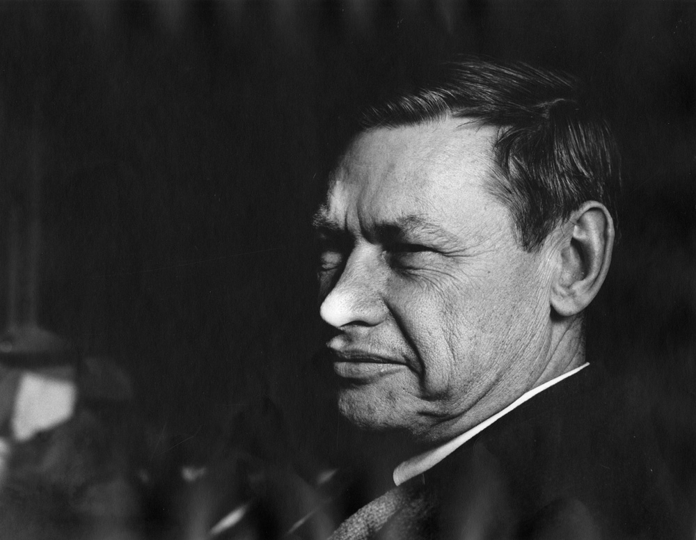
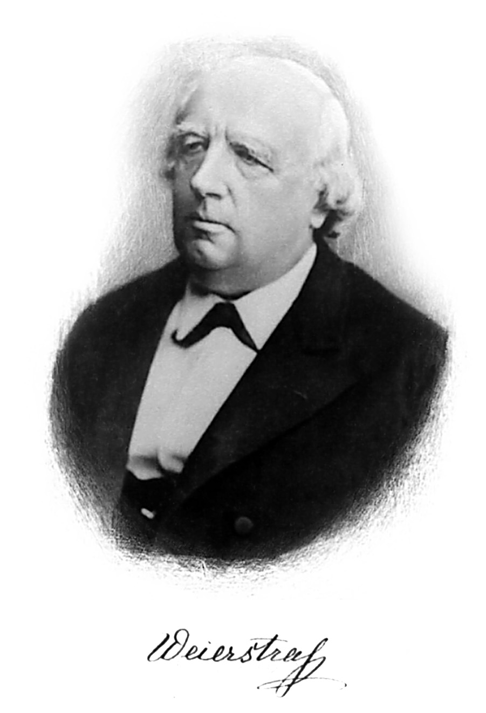

The Stone–Weierstrass theorem is one of the great shortcuts of approximation theory. Instead of constructing an approximation to each continuous function by hand, check that a linear family contains constants, distinguishes points, and is stable under multiplication. Universality follows.
But multiplication can feel like the wrong primitive. Neural networks use activations, not products. Other models combine functions using a maximum, an absolute value, or a smooth saturation. Must we build a separate multiplication gadget for each of them?
A beautiful extension due to Karel de Leeuw and Yitzhak Katznelson says that, in a real linear function space, any continuous non-affine operation is enough [2]. Approximate closure under that operation already forces approximate closure under products. The proof explains why: smooth curvature reveals a square, and smoothing reveals curvature even when the original nonlinearity has corners.

Marshall H. Stone

Karl Weierstrass
Weierstrass: Smithsonian Institution Libraries, via Wikimedia Commons, public domain.
First, products only need to exist in the closure
Let \(K\) be a compact Hausdorff space. We work with real-valued continuous functions and the uniform norm
\[ \|f\|_\infty=\sup_{x\in K}|f(x)|. \]Let \(V\subset C(K,\mathbb R)\) be a real linear subspace containing the constant function \(1\). Assume it separates points: whenever \(x\ne y\), some \(f\in V\) satisfies \(f(x)\ne f(y)\). Write \(A=\overline V\) for its uniform closure.
The classical Stone–Weierstrass theorem says that \(V\) is dense if it is also an algebra: \(fg\in V\) for every \(f,g\in V\) [1]. A useful reformulation, discussed in an earlier post, only asks for approximate products.
Theorem 1 (approximate products suffice). Under the assumptions above, if
\[ \inf_{u\in V}\|u-fg\|_\infty=0 \]for every \(f,g\in V\), then \(A=C(K,\mathbb R)\).
Proof of Theorem 1: the closure is an algebra
Given \(f,g\in A\), choose \(f_n,g_n\in V\) converging uniformly to them. Each \(f_ng_n\) belongs to \(A\) by assumption, and
\[ \begin{aligned} &\|f_ng_n-fg\|_\infty\\ &\quad\le \|f_n\|_\infty\|g_n-g\|_\infty\\ &\qquad+\|g\|_\infty\|f_n-f\|_\infty \longrightarrow0. \end{aligned} \]Here \(\|f_n\|_\infty\) stays bounded. Thus \(fg\in A\). The closed space \(A\) is a unital algebra separating points, so classical Stone–Weierstrass gives \(A=C(K,\mathbb R)\). Conversely, if \(A\) is an algebra, every product of members of \(V\) belongs to \(A\), exactly the approximate-product condition. \(\square\)
Polynomials restricted to a compact subset of \(\mathbb R^d\) are an exact algebra separating points. So are real trigonometric polynomials on a torus: products reduce to sums of Fourier modes. This proves density, not convergence of the ordinary Fourier partial sums of every continuous function.
Another useful example is the span of \(x\mapsto e^{w\cdot x}\), with \(w\in\mathbb R^d\). It contains constants, separates points, and satisfies \(e^{u\cdot x}e^{v\cdot x}=e^{(u+v)\cdot x}\). For deep ReLU networks, by contrast, products need not be networks exactly; approximate products suffice. The next theorem lets us bypass even that construction.
Replace multiplication by one nonlinear operation
Fix \(s\ge1\) and a continuous map \(h:\mathbb R^s\to\mathbb R\). It acts on functions pointwise:
\[ h(f_1,\ldots,f_s)(x) =h\bigl(f_1(x),\ldots,f_s(x)\bigr). \]We say that \(h\) operates on \(A\) when this function lies in \(A\) for every \(f_1,\ldots,f_s\in A\). Non-affine means that \(h\) is not of the form \(a\cdot z+b\).
Theorem 2 (de Leeuw–Katznelson, a multivariable formulation). Let \(V\subset C(K,\mathbb R)\) be a real linear subspace containing constants and separating points. Suppose that, for one continuous non-affine \(h:\mathbb R^s\to\mathbb R\),
\[ \inf_{u\in V}\|u-h(f_1,\ldots,f_s)\|_\infty=0 \]for every \(f_1,\ldots,f_s\in V\). Then \(\overline V=C(K,\mathbb R)\).
This is the real uniform-approximation consequence of the operating-functions theorem of de Leeuw and Katznelson [2]; later accounts include [3] and [4]. Its scalar version can even be formulated for an operation defined only on an interval, applied to functions taking values there. We use globally defined operations to keep the argument transparent. The multivariable version reduces to the scalar one along an affine line.
“Stable” here means closed, up to uniform approximation, under a pointwise operation. It is not a statement about robustness to perturbing the input or about bounded network weights. We keep linear combinations and constants; only the product hypothesis is being replaced.
Why smooth curvature gives multiplication
First suppose the operation is scalar and \(C^2\), denoted \(\sigma:\mathbb R\to\mathbb R\), and that it operates on the closed space \(A\). Since \(\sigma\) is non-affine, some \(b\) satisfies \(\sigma''(b)\ne0\). For \(f\in A\), form the central difference
\[ Q_t(f)= \frac{\sigma(b+tf)+\sigma(b-tf)-2\sigma(b)} {t^2\sigma''(b)},\qquad t\ne0. \]Constants, linear combinations, and the operation \(\sigma\) keep \(Q_t(f)\) in \(A\). Taylor expansion cancels the constant and linear terms, leaving
\[ Q_t(f)\longrightarrow f^2 \quad\text{uniformly as }t\longrightarrow0. \]Closedness gives squares; polarization gives products:
\[ fg=\frac{(f+g)^2-(f-g)^2}{4}. \]That is the whole mechanism. A small amount of curvature, viewed at the right offset and scale, recovers the algebra structure.
Why the Taylor limit is uniform
Put \(M=\|f\|_\infty\). Taylor's formula with integral remainder gives, for every real \(z\),
\[ \sigma(b+z)+\sigma(b-z)-2\sigma(b) =z^2\!\int_0^1(1-r) \bigl[\sigma''(b+rz)+\sigma''(b-rz)\bigr]\,dr. \]Taking \(z=tf(x)\), we obtain
\[ \|Q_t(f)-f^2\|_\infty \le \frac{M^2}{|\sigma''(b)|} \sup_{|u-b|\le |t|M}|\sigma''(u)-\sigma''(b)| \longrightarrow0. \]Only continuity of the second derivative near \(b\) is needed. \(\square\)
A useful sanity check is \(\sigma(t)=t^3\). Its curvature vanishes at the origin, but shifting to \(b=1\) gives the exact identity
\[ \frac{(1+tf)^3+(1-tf)^3-2}{6t^2}=f^2. \]The constants are doing real work: one must be free to move to a point where the nonlinearity has curvature.
Corners are enough: the general proof
The absolute value and ReLU have no classical second derivative at their corner. Yet averaging nearby translates smooths the corner without losing the ability to operate on \(A\). This supplies the missing curvature. The same argument works for any continuous non-affine operation, however irregular.
Proof of Theorem 2: pass to the closure, restrict to a line, and smooth
Step 1: the operation passes to the closure. Let \(A=\overline V\) and \(f_j\in A\). Choose \(f_{j,n}\in V\) converging uniformly to \(f_j\), for \(j=1,\ldots,s\). Their joint ranges lie in one compact box. Uniform continuity of \(h\) on that box implies
\[ h(f_{1,n},\ldots,f_{s,n}) \longrightarrow h(f_1,\ldots,f_s) \quad\text{uniformly}. \]The functions on the left belong to \(A\) by the approximate-operation hypothesis. Closedness therefore puts the limit in \(A\): \(h\) operates on \(A\).
Step 2: find a scalar nonlinearity. Some affine line has a non-affine restriction
\[ \sigma(t)=h(a+tv),\qquad a,v\in\mathbb R^s. \]Because each \(a_j+v_jf\) belongs to \(A\), the scalar function \(\sigma\) also operates on \(A\).
Lemma 1 (a non-affine restriction exists). If a map on \(\mathbb R^s\) is affine on every affine line, it is affine.
Proof of Lemma 1: lines imply homogeneity and additivity
Subtract its value at zero and call the result \(H\). Lines through zero give \(H(tz)=tH(z)\). The line through \(z,w\) gives the midpoint identity
\[ H((z+w)/2)=\tfrac12H(z)+\tfrac12H(w). \]Homogeneity then implies \(H(z+w)=H(z)+H(w)\). Thus \(H\) is real linear, and the original map is affine. Taking the contrapositive proves the claim. \(\square\)
Step 3: smooth without leaving the space. Choose a nonnegative smooth function \(\rho\), supported in \([-1,1]\), with integral one. For \(\delta>0\), set
\[ \begin{aligned} \rho_\delta(y)&=\delta^{-1}\rho(y/\delta),\\ \sigma_\delta(t)&=\int_{\mathbb R}\sigma(t-y)\rho_\delta(y)\,dy. \end{aligned} \]Then \(\sigma_\delta\) is smooth and converges to \(\sigma\) uniformly on every bounded interval as \(\delta\to0\). Importantly, it still operates on \(A\).
Lemma 2 (averaging translates preserves operation). If continuous \(\sigma\) operates on a closed unital real linear space \(A\), so does \(\sigma_\delta\).
Proof of Lemma 2: approximate the average by finite sums
For \(f\in A\) and fixed \(y\), the function \(\sigma(f-y)\) is in \(A\). On the compact set \(f(K)\times[-\delta,\delta]\), the integrand is continuous. Riemann sums for
\[ x\longmapsto\int_{-\delta}^{\delta} \sigma(f(x)-y)\rho_\delta(y)\,dy \]therefore converge uniformly in \(x\). Each sum is a finite real linear combination of members of \(A\). Their limit belongs to \(A\) because it is closed. \(\square\)
At least one \(\sigma_\delta\) must be non-affine. Otherwise their locally uniform limit \(\sigma\) would be affine: an affine function is determined by its values at \(0\) and \(1\), so those two convergences determine its limit everywhere.
Step 4: recover the algebra. Apply the preceding Taylor argument to a smooth non-affine \(\sigma_\delta\). It gives \(f^2\in A\) for every \(f\in A\), then \(fg\in A\) by polarization. Since \(A\) contains constants and separates points, Stone–Weierstrass concludes that \(A=C(K,\mathbb R)\). \(\square\)
Absolute values, maxima, and activations
The theorem covers smooth choices such as \(\sigma(t)=e^t\), \(\sin t\), \(\tanh t\), or \(t^2\), and nonsmooth choices such as \(|t|\) and \(t_+=\max(t,0)\). It also covers genuinely multivariable operations such as \(h(u,v)=\max(u,v)\).
For absolute value, the connection to the lattice version of Stone–Weierstrass is especially direct:
\[ \begin{aligned} \max(f,g)&=\tfrac12(f+g+|f-g|),\\ \min(f,g)&=\tfrac12(f+g-|f-g|). \end{aligned} \]Conversely, \(|f|=\max(f,-f)\), and ReLU gives \(|f|=f_++(-f)_+\). In a linear space, these three operations provide the same closure property. Their corners encode enough nonlinearity to recover all continuous functions, even though none visibly multiplies two inputs.
A universality principle for nonlinear networks
Let \(K\subset\mathbb R^d\) be compact and fix a continuous non-affine activation \(\sigma\). Consider finite feedforward computation graphs built from the coordinates \(x_1,\ldots,x_d\), constants, real affine combinations, and scalar gates \(z\mapsto\sigma(z)\). Earlier signals may be reused: skip connections are allowed, as are an affine output and arbitrary finite depth and width.
Corollary 1 (universality of nonlinear circuits). The scalar outputs of these computation graphs are uniformly dense in \(C(K,\mathbb R)\).
Proof of Corollary 1: check the closure rules
Constants and coordinates are available, so the family contains \(1\) and separates points. Run two graphs in parallel and combine their outputs to obtain closure under real linear combinations. Add one gate to obtain \(\sigma(f)\) from any output \(f\). Theorem 2 applies, with exact rather than merely approximate closure under \(\sigma\). \(\square\)
This includes the usual universal approximation mechanism for deep ReLU networks. Specifying skip connections avoids silently assuming that an arbitrary activation can pass an old signal unchanged through every intervening layer.
Non-affine is not the same as nonpolynomial. The corollary allows repeated composition and growing depth. With \(\sigma(t)=t^2\), a single hidden layer only produces polynomials of degree at most two, so it is not universal on an interval. It is not closed under applying \(\sigma\) to its own outputs: squaring \(x^2\) produces \(x^4\). For one-hidden-layer ridge networks with biases and a continuous activation, universality on arbitrary compact subsets of Euclidean space requires nonpolynomiality, which is also sufficient [5]. Our hypothesis concerns every already-built function, not just an activation applied once to affine inputs.
What the hypotheses buy us
Non-affinity cannot be dropped: affine functions on \([0,1]\) contain constants and separate points, and every affine operation preserves them. They are nevertheless a closed proper subspace of \(C([0,1])\).
Constants cannot be dropped either. The closed linear space of continuous functions vanishing at \(0\) separates points of \([0,1]\) and is stable under squaring, but can never approximate the constant \(1\). Linearity is also essential: continuous nondecreasing functions contain all constants and separate points, and exponentiation preserves them, but they are not dense in all continuous functions.
Finally, this is a qualitative theorem in the uniform norm. It says nothing by itself about the number of neurons, training, approximation rates, or coefficient bounds. The factor \(t^{-2}\) in the curvature argument warns that the proof may amplify weights considerably.
The useful lesson is structural: once constants and linear combinations are available, multiplication is not a privileged source of expressivity. Closure under one continuous non-affine operation already contains an algebra in disguise.
References
- Marshall H. Stone. The Generalized Weierstrass Approximation Theorem. Mathematics Magazine 21 (1948), 167–184 and 237–254. Part I · Part II.
- Karel de Leeuw and Yitzhak Katznelson. Functions that operate on non-self-adjoint algebras. Journal d’Analyse Mathématique 11 (1963), 207–219. Paper.
- Eggert Briem. Ultraseparating Function Spaces and Operating Functions for the Real Part of a Function Algebra. Proceedings of the American Mathematical Society 111(1) (1991), 55–59. Paper.
- Osamu Hatori. Non-Lipschitz functions which operate on function spaces. Scientiae Mathematicae 1(1) (1998), 7–14. Paper.
- Moshe Leshno, Vladimir Ya. Lin, Allan Pinkus, and Shimon Schocken. Multilayer feedforward networks with a nonpolynomial activation function can approximate any function. Neural Networks 6(6) (1993), 861–867. Paper · Author-hosted PDF.